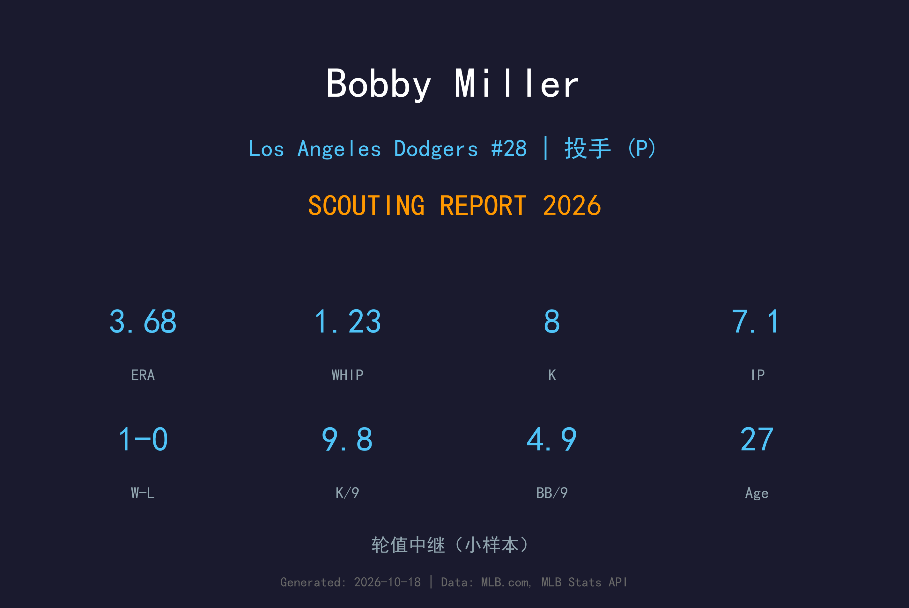
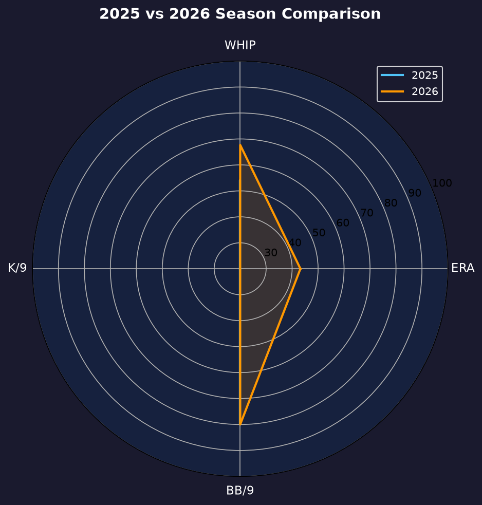
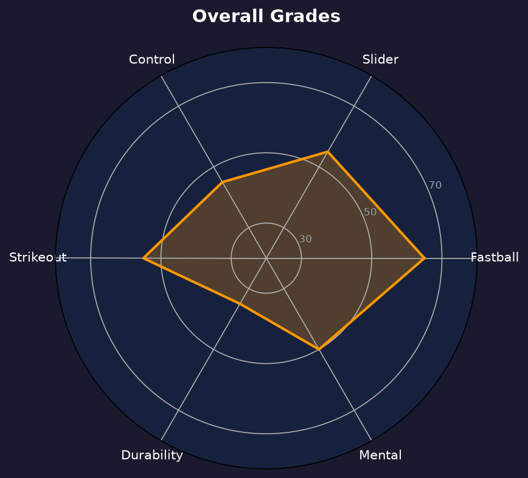

Los Angeles Dodgers #28 | 投手 | 右投 / 左打 | 首轮天赋的救赎之路

Bobby Miller 是道奇农场近年来最大的"如果"：2020 年首轮第 29 顺位、6'5" 骨架、98 mph 均速的精英速球，2023 年新秀年缴出 3.76 ERA 后，所有人都以为道奇轮值的下一个支柱已经到位。
然后伤病与控球问题接踵而至：2024 年整季低迷（8.52 ERA），2025 年仅出赛 2 场，2026 年直到 9 月 14 日才被九月扩编召回——3 场后援 7.1 局、3.68 ERA、8 次三振。数据不算惊艳，但 9.82 K/9 的速球三振能力从未离开。
27 岁的 Miller 已没有"潜力股"的缓冲带。他的速球依然是 elite 级武器，但 2025-2026 合计仅 12.1 局大联盟出赛。2027 年是他证明自己还能健康站上投手板的最后窗口期之一：要么找回 2023 年的自己，要么沦为伤仲永的注脚。
从 Louisville 大学被道奇在第 1 轮（总第 29 顺位）选中，是当时道奇农场评分最高的投手新秀之一。
5 月 23 日完成大联盟首秀，新人年缴出 3.76 ERA，速球均速逼近 98 mph，被普遍视为道奇轮值的未来支柱。
9 月 14 日被扩编召回，3 场后援 7.1 局 3.68 ERA、8 次三振，季末留在 40 人名单——救赎之路的第一步。
小样本警告：仅 7.1 局。三振率与 WHIP 显示速球威力回归，但 4 次保送 + 3 次触身（合计 8.59 的"免费上垒率"）说明控球依然粗糙。

| 赛季 | G（GS） | ERA | IP | SO | BB | WHIP | HR |
|---|---|---|---|---|---|---|---|
| 2025 | 2（1） | 12.60 | 5.0 | 7 | 2 | 2.60 | 2 |
| 2026 | 3（0） | 3.68 | 7.1 | 8 | 4 | 1.23 | 1 |
2025 年 5 局灾难（被打 11 支安打、19.80 H/9）到 2026 年 7.1 局回稳——WHIP 从 2.60 砍到 1.23 是实质进步。两年合计仅 12.1 局，健康是他一切故事的前提。
主战球种，占全部配球的 40.1%，均速 79.8 mph。曲球落差大，用于改变打者视线高度与击球节奏。
常用武器，占全部配球的 34.5%，均速 97.2 mph。直上直下的四缝线速球，负责抢好球数与建立球数领先，是所有配球的基准。
辅助配球，占全部配球的 13.4%，均速 96.0 mph。伸卡球下沉明显，主要用于制造滚地球、压低长打率。
辅助配球，占全部配球的 7.0%，均速 89.4 mph。变速球靠与速球的速差取命，主要用来对付反侧打者。
偶尔使用，占全部配球的 4.9%，均速 87.9 mph。传统滑球横向位移锐利，是两好球后的主要挥空武器。
Miller 拥有道奇投手群里最顶级之一的 raw stuff：98 mph 均速 + 锐利滑球。但大联盟成绩表上写着的却是 2024 年的 8.52 ERA 和过去两年合计 12.1 局。落差的核心是 mechanics 的复杂性与随之而来的控球不稳：当动作 sync 时，他是 2023 年那个 3.76 ERA 的新星；一旦失 sync，保送、触身与长打一起涌来。2026 年 3 场 3 次触身球就是这种双刃剑的写照。
九月扩编后的 3 场出赛提供了三个好消息：其一，WHIP 1.23，比 2025 年的 2.60 大幅改善；其二，被轰率从 3.60 降到 1.23 HR/9；其三，9.82 K/9 说明速球三振能力完整保留。他依然会把球投进危险区域，但恢复的大方向是对的。
短期角色：伤愈后从牛棚重新出发，用短局数重建动作模式与信心。长期天花板仍是 #3 先发——但这需要他重新证明耐久度与控球。如果先发路线走不通，退而求其次是高威力短中继（two-inning weapon），用他的 98 mph 在 6-7 局吃局数。

天赋毋庸置疑，健康与控球决定存亡的高风险高回报投手
B- 级 / 高风险高回报
Bobby Miller 的2027赛季目标是健康地完成一个完整赛季（无论先发或牛棚），把 BB/9 压回 3.0 以下。他的天赋仍然对得起首轮身价，但身体必须先回答"能不能每周站上投手板"这个最基础的问题。
2026：9/14 九月扩编回归，3 场后援 3.68 ERA、9.82 K/9；季末留 40 人名单
2027：目标健康完整赛季，春训竞争轮值第六人/长中继，BB/9 ≤3.0
2028+：若找回 2023 状态，仍是 #3 先发候选；若伤病持续，可能转为短中继或面临 non-tender
Robert Miller 1999 年 4 月 5 日出生于伊利诺伊州 Elk Grove Village。他就读于路易斯维尔大学（University of Louisville），在竞争激烈的大西洋海岸联盟（ACC）磨炼出 98 mph 的快速球与三球种 arsenal。2020 年 MLB 选秀，道奇在第一轮（总第 29 顺位）选中了他——在一个因疫情缩短到五轮的选秀里，首轮签的含金量格外高。
进入职业体系后，Miller 的爬升速度惊人：2022 年他已在小联盟展现出顶级三振率，2023 年 5 月 23 日完成大联盟首秀，新人年 3.76 ERA、多次投出 99+ mph 的速球，被 Baseball America 等权威媒体评为道奇头号新秀之一。
然而 2024 年成为转折点：肩伤与 mechanics 失调整整困扰了他一年，留下 8.52 ERA 的刺眼数字。2025-2026 两年，他与伤病名单为伍，大联盟出赛合计仅 12.1 局。2026 年 9 月 14 日的九月扩编召回，是他时隔近一年再次站上大联盟投手板。Miller 的故事还没有写完——27 岁的他手里仍握着 98 mph 的速球和首轮的天赋，只是时间不多了。队友和教练都说，他的心态依然积极，休赛期的训练投入程度是全队最高的一档。